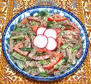

|
Meat & Vegetable Salad - BakhorUzbekistan - Salat Bakhor | ||||
| Makes: Effort: Sched: DoAhead: |
1-3/4 # ** 1-1/2 hrs Yes |
A very nice, flavorful and substantial salad, capable of standing as a light lunch dish. The salting and wringing out of the cucumbers makes the salad more durable for pre-prep and buffet. | |||
|
|
9 1/2 8 12 2 ----- 1 1 1 1/3 1/4 2 1 ------ 3 ------ 1 |
oz t oz oz --- cl T T t t T T --- T --- |
Cucumbers (1) Salt Beef / Lamb, boiled Tomatoes Scallions -- Dressing Garlic Dill, fresh Cilantro Pepper Salt Wine Vinegar (2) Oil (3) -- Finish Mayonnaise (4) -- Garnish Egg, hard boiled |
One and three quarters pounds will make at least 6 salad size servings. Make - (1-1/2 hrs - 20 min work)
|